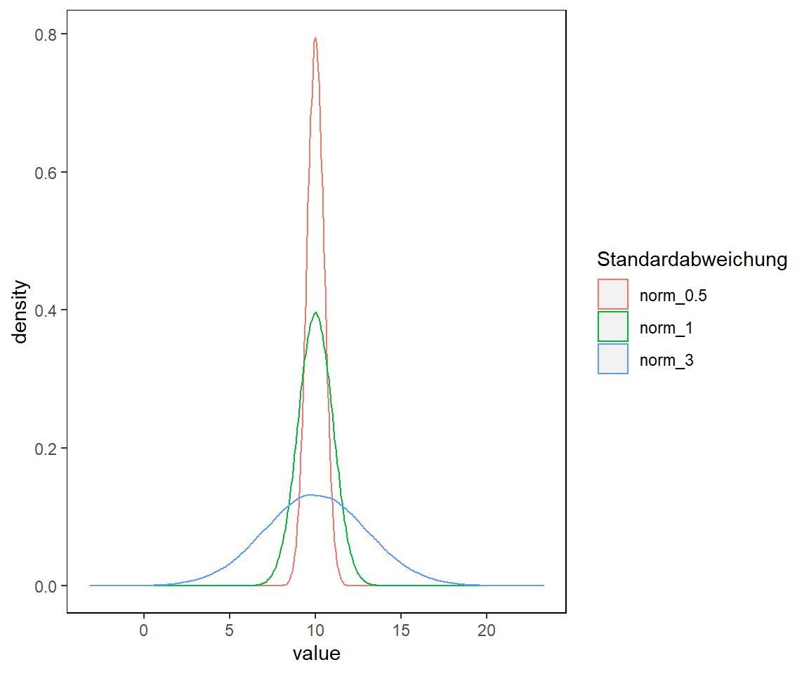

- 1 Einleitung
- 2 Erste Schritte mit R
- 3 Grundlagen
3.3 Zufallszahlen erzeugen
R ist eine Statistiksprache und da wäre es doch verwunderlich wenn es nicht auch Funktionen gibt, um Zufallszahlen zu erzeugen. Für Vektoren ist dies die Funktion sample():
| Argument | Definition |
|---|---|
x |
Ein Vektor (character oder numeric) von dem die Zufallszahlen erzeugt werden. |
size |
Die Anzahl der Zufallszahlen. Der Standard (default) ist die Länge des Vektors x. |
replace |
Standard ist FALSE. Bei TRUE kann die Zahl mehrmals vorkommen. |
prob |
Ein Vektor der Möglichkeiten für x mit der Wahrs x is. The vector of probabilities you give as an argument should add up to one. If you don’t specify the prob argument, all outcomes will be equally likely. |
# Die Zahlen 1 bis 5 treten nur einmal auf
sample(x = 1:5, size = 5)
## [1] 1 3 5 2 4
# Die Zahlen 1 bis 5 können ggf. mehrmals auftreten hei replace = TRUE
sample(x = 1:5, size = 5, replace = T)
## [1] 5 2 5 2 2Figure 3.8: Illustration von Allison Horst
Die erzeugten Zufallsvariablen können dabei normalverteilt oder nicht-normalverteilt sein. Es gibt jedoch noch eine Vielzahl weiterer Funktionen in R, die mit dem help Befehl aufgerufen werden können
?DistributionsDie normale Standardverteilung (auch bekannt unter Gausssche Normalverteilung) kann mit der Funktion rnorm erzeugt werden. Es können dabei die folgenden Argumente gesetzt werden.
| Argument | Definition |
|---|---|
n |
Stichprobenanzahl. |
mean |
Mittelwert der Verteilung. |
sd |
Standardabweichung der Verteilung. |
# Erstelle 100000 Zahlen mit dem Mittelwert 10 und der Standardverteilung 3
a <- rnorm(n = 100000, mean = 10, sd = 3)
a <- as.data.frame(a)
# Erstelle zwei weitere Spalten. Selber Mittelwert aber unterschiedliche SD
# Keine Sorge! Was das komische Symbol %>% bedeutet lernen wir später
colnames(a) <- c("norm_3")
a <- a %>%
mutate(norm_1 = rnorm(n = 100000, mean = 10, sd = 1)) %>%
mutate(norm_0.5 = rnorm(n = 100000, mean = 10, sd = 0.5)) %>%
pivot_longer(cols = everything())
# Erstelle die Abbildung mit ggplot...keine Sorge. Die Power von ggplot lernt ihr später kennen.
a %>%
ggplot(aes(x = value, color = fct_reorder(.f = name, .x = value, .fun = max))) +
geom_density(alpha = 0.1) +
scale_color_discrete(name = "Standardabweichung") +
my_theme
Das Erzeugen der Daten ist spielend leicht. Plotten der Daten vermittelt weiterhin einen Eindruck davon, wie die Dichteverteilung der Daten variiert bei gleichem mean() aber unterschiedlicher sd().
Was sagt euch die Stichprobenanzahl über das Aussehen der Kurve aus?
# Normalverteilung bei 10 Zufallszahlen
a <- rnorm(n = 10, mean = 10, sd = 3) %>% as.data.frame()
p1 <- a %>%
ggplot(aes(x = .)) +
geom_density(alpha = 0.1) +
labs(
title = "n = 10"
) +
geom_vline(aes(xintercept = mean(.)), color = "red") +
my_theme
# Normalverteilung bei 100 Zufallszahlen
a <- rnorm(n = 100, mean = 10, sd = 3) %>% as.data.frame()
p2 <- a %>%
ggplot(aes(x = .)) +
geom_density(alpha = 0.1) +
labs(
title = "n = 100"
) +
geom_vline(aes(xintercept = mean(.)), color = "red") +
my_theme
# Normalverteilung bei 100.000 Zufallszahlen
a <- rnorm(n = 100000, mean = 10, sd = 3) %>% as.data.frame()
p3 <- a %>%
ggplot(aes(x = .)) +
geom_density(alpha = 0.1) +
labs(
title = "n = 100.000"
) +
geom_vline(aes(xintercept = mean(.)), color = "red") +
my_theme
p1 + p2 + p3
üö® Jedes mal wenn das Skript neu ausgef√ºhrt wird, √§ndern sich auch die Zufallszahlen.